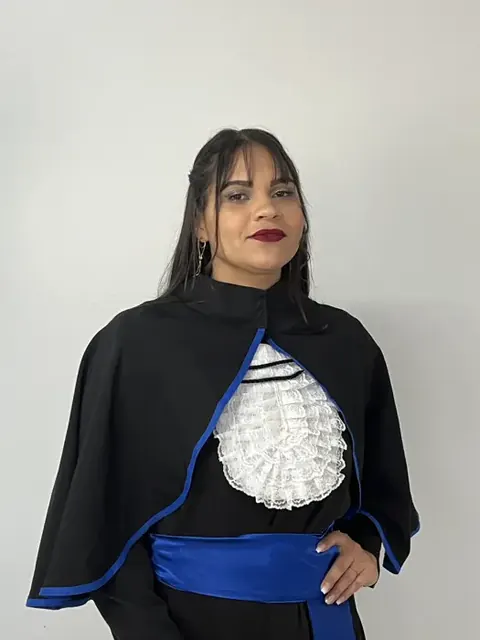

Bronze
R$ 50,00Pago na sua chave Pix
Programa de indicação · UniCive Caruaru
Você já viu sair edital que ele queria e não podia nem se inscrever, porque pedia nível superior. A UniCive resolve isso com matrícula de R$ 99,90. E cada matrícula confirmada que vier de você cai na sua chave Pix.
Recebemos. Nosso time já vai falar com a pessoa. Quando a matrícula for confirmada, essa indicação entra no seu placar e o Pix é feito.
Como participar
Manda o nome e o WhatsApp de quem você quer indicar, junto com a sua chave Pix.
A equipe verifica se a pessoa indicada é elegível para o programa.
Nosso time fala com ela, apresenta os cursos e faz a matrícula.
Matrícula confirmada, você entra no placar e o financeiro faz o pagamento.
Missão Indicação
Só entra no placar matrícula confirmada. A premiação é pela quantidade de matrículas: a 1ª, a 2ª e a 3ª têm valores diferentes.
O que você está indicando
Graduações reconhecidas pelo MEC, montadas para quem quer assumir um concurso de nível superior sem largar o emprego nem sair da cidade. Quem você indicar escolhe entre estes cursos:

Quem termina sai com diploma de nível superior na mão. É o que destrava concurso, promoção e vaga que hoje ele nem pode disputar.
Fazer minha indicaçãoRegras
A indicação entra no placar depois que a pessoa efetivamente se matricula.
A indicação vale quando a pessoa se matricula em um curso cuja matrícula passa de R$ 99.
Se a pessoa indicada já estiver em algum formulário, sistema, CRM ou WhatsApp nosso, a indicação não dá direito ao prêmio. É o que impede indicação falsa.
Um coordenador ou liderança (Tecnologia, CRM ou Vendas) confere a indicação nos nossos sistemas antes de liberar o pagamento.